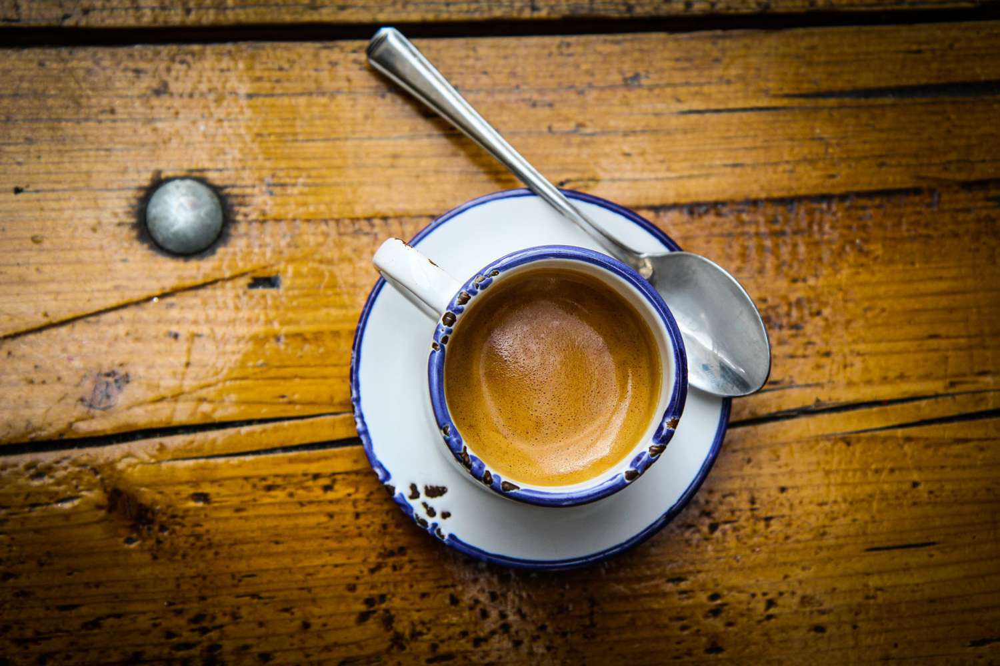

| Espresso | ||
|---|---|---|
| It's E + S = ESpresso, not eKspresso :) Well, Espresso is made by forcing nearly boiling water through finely-ground coffee beans, which results in a concentrated, syrup-like coffee drink. This is the base for many Italian beverages in coffee shops. When compared to regular brewed coffee, espresso is much stronger than the other types of coffee drinks. Espressos are enjoyed in shots where a single shot is one 30ml and a long (single and double) shot is 60ml in amount, respectively. |
 | |
| Main page | ||
| Latte | ||
| Black coffee | ||